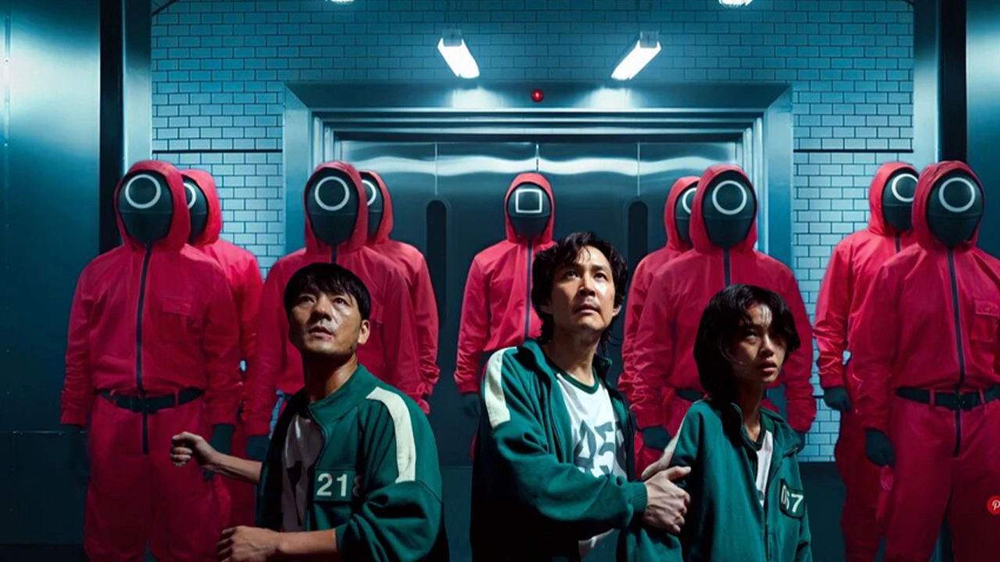

| Animasyon | Aksiyon | Bilim-Kurgu | Sitcom |
Başrolünde Penn Badgley'nin "Joe Goldberg" karakteriyle bilinen popüler dizi You, beşinci ve final sezonuyla yayınlanmaya hazırlanıyor. Netflix tarafından yapılan açıklamaya göre, uzun süredir merakla beklenen bu sezonun yayın tarihi 2025 yılı olarak belirlendi. Psikolojik drama türündeki bu sürükleyici yapım, 2018 yılında ilk kez izleyiciyle buluştu ve bugüne kadar dört sezon yayınladı. Seri, karanlık bir aşk hikayesini,saplantılı bir adamın hayatını başarılı bir şekilde izleyicilere aktardı. Beşinci sezonun, hikayeyi nasıl sonlandıracağı şimdiden büyük bir merak konusu.

Netflix’in dünya çapında çok konuşulan dizisi Squid Game, ilk sezonuyla hem eleştirmenlerden hem de izleyicilerden tam not almıştı. Sürükleyici hikâyesi, derin karakter analizleri ve toplumsal eleştirileriyle dikkat çeken bu yapım, birçok kişinin beklentisini zirveye çıkarmıştı. Ancak 2. sezon, bu beklentileri karşılamaktan oldukça uzak kaldı.Birçok kesim tarafından eleştirilerin odağı olan dizi sonu belli olmayan bir şekilde son buldu.Kim bilir belki yeni bir sezon daha çekilir.